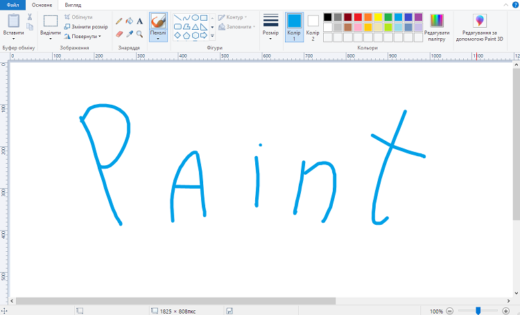

GŁÓWNA
PROGRAMY
Paint
GIMP
Paint Tool SAI
Blender
QUIZ
GALERIA
KONTAKT
GALERIA

Microsoft Paint w systemie Windows 10
Microsoft Paint w systemie Windows XP
GIMP - wersja 2.10
Wybór koloru w GIMP
Zrzut ekranu SAI 2
Kwiatek zrobiony z narzędziem Symetryczna linijka
Blender - wersja 3.1.0
Kula zrobiona z wielokątów